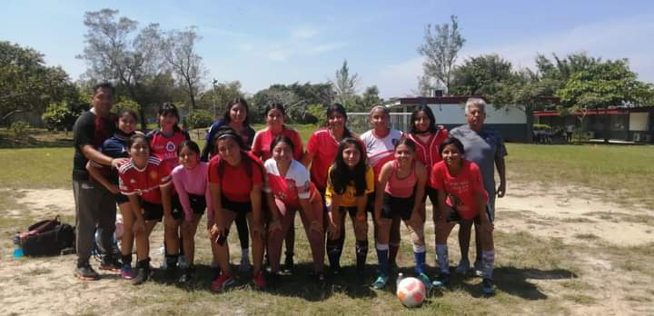
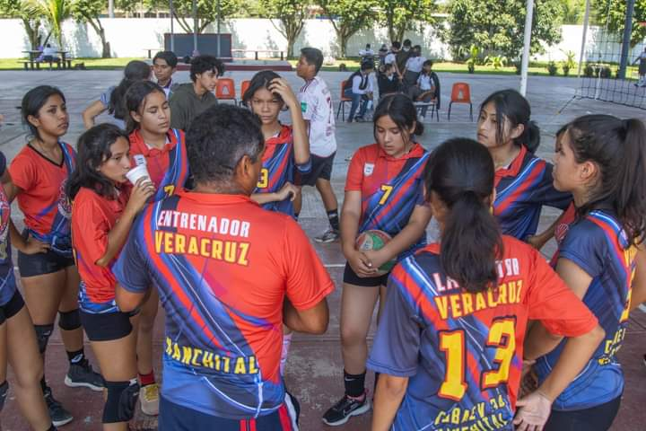

| SEMESTRE | HORAS | DIAS |
|---|---|---|
| 2 | 12:30-3:00 | martes |
| 4 | 7:00-8:30 | miercoles |
| 6 | 12:30-3:00 | jueves |
| CLAVE CG | CLAVE CDB | Conocimientos básicos | Habilidades | Actitudes | Aprendizajes esperados |
|---|---|---|---|---|---|
| CG 3.1 | Generalidades de la
administración deportiva
|
Reconoce la importancia
de la administración en el
deporte. |
Toma decisiones de manera
responsable y reflexiva. Se relaciona con sus semejantes de forma colaborativa mostrando disposición al trabajo organizado. |
Aplica el concepto de
administración del deporte y sus
antecedentes con una actitud
propositiva. |
|
| CG 3.3 | CPBPD1 | Proceso administrativo |
Utiliza las etapas del
proceso administrativo. Distingue los diferentes tipos de documentos de la administración deportiva y su estructura |
Demuestra una actitud
propositiva. |
Clasifica las diferentes etapas del proceso administrativo, para planear, organizar, dirigir y controlar cualquier actividad deportiva, demostrando una actitud propositiva. |
| CG 4.2 | Documentos |
Distingue los diferentes tipos de documentos de la administración deportiva y su estructura | Se relaciona con sus semejantes de forma colaborativa mostrando disposición al trabajo organizado | Desarrolla un plan administrativo
para su uso y aplicación en las
diferentes áreas de manera
colaborativa, mostrando
disposición al trabajo organizado. Integra un proyecto aplicando los fundamentos de la administración que le permitan aplicarlo en su área de trabajo y en su vida cotidiana, seleccionando los diferentes tipos de documentos de la administración deportiva, actuando de manera responsable y reflexionando de manera profunda sobre las actividades a realizar. |
Estos son los medios con los cual el asesor califica a los alumnos en su clase, es igual en todos los semestre, al igual que utiliza una rublica (los puntos dependen del maestro).
- actividades fisica que hacen en su hora de clase
- desempeño de cada alumno en los ejercicios
- asistencia de cada alumno (presentandose en todas las clases)
| TEMAS | SEMESTRES |
|---|---|
| 1 | volibol, basquetbol |
| 2 | futbol,tenis,basquet,atletismo |
| 3 | beisbol,futbol,volibol |
Estas son algunos de las reglas de los deportes que se practican en cada semestre
VOLIBOL
- se consigue punto cuando el equipo enemigo no controla el balon o comete una falta
- los jugadores de un equipo deben evitar que el balon toque el suelo dentro de su campo,ya que si no sere punto para el equipo contrario.
- si el balon acab afuera del campo de juego, por un fallo al atacar o por una mala defensa,se considera falta al equipo que tocase el ultimo balon, y se le anotara un punto al equipo contrario
- se considera fuera cuando el balon toca el techo,publico o a los arbitros.tambien es fuera cuando el balon toca red o los postes
- cuando un equipo va a sacr,y los jugadores estan mal situados se considera falta de rotacion.
- si un jugador retiene el balon se considera dobles
- cuando se va a sacar ningun jugador puede tocar la red
- los jugadores no se pueden meter en el campo del equipo contrario
- los equipos de voleibol pueden estar constituidos de doce jugadores como maximo
- El equipo local siempre comienza jugando a la defensiva, mientras que el visitante inicia bateando. Después de tres outs, cambian su posición en el campo.
- El campo de juego tiene dos líneas que delimitan el terreno y que, dependiendo de dónde caiga un batazo, se considerará la pelota en juego o fuera de juego. En caso de que la pelota toque cualquier parte del terreno entre estas dos líneas después de ser bateada, es marcada como buena; si cae detrás de las líneas, será foul.
Si un bateador falla al golpear la pelota, acumula un "strike". Al acumular tres strikes en su turno, el jugador queda fuera, es decir, es out. - Cuando tres jugadores a la ofensiva son puestos fuera, finaliza el turno ofensivo del equipo y pasa a la defensiva, mientras que el oponente que defiende pasa a batear.
- Cuando la pelota pasa por una zona donde el bateador pudo haber hecho contacto con ella y no lo hace, el lanzamiento se canta como strike. Si la pelota pasa fuera de esa zona, se marcará "bola".
Cuando el bateador acumula cuatro "bolas" o es golpeado por un lanzamiento del pitcher, automáticamente avanza a la primera base. - Los jugadores deben seguir el orden al bate de su equipo establecido por el manager antes del juego en la hoja del “lineup” o “alineación”.
- Si el bateador golpea a la pelota y cae entre las dos líneas, tendrá que correr las bases mientras que los jugadores del equipo contrario intentarán recoger la pelota para tocar al corredor con ella o pisar la base teniendo la pelota en su poder. El corredor queda out si logran hacerlo; en caso contrario, llegará "safe" a la base.
- Si el bateador golpea la pelota y un jugador defensivo la captura antes de que esta toque el suelo, el bateador es puesto fuera. El objetivo del béisbol es que la mayor cantidad de jugadores pisen cada una de las cuatro bases en el campo. De conseguirlo, se considera que anota una carrera, en otros países como Japón también conocido como punto.
- Si el bateador golpea la pelota y ésta rebasa la pared del fondo entre las líneas, se decreta home run, en español conocido como cuadrangular. El jugador debe recorrer las bases pisando cada una de ellas para anotar la carrera para su equipo. Si hay corredores en las bases, estos también anotan automáticamente.
- Palo o atajada en un penal.
- Pase dentro del área.
- Sanción a los entrenadores.
- El árbitro no es cancha.
- Barrera sin rivales.
- Elije el carril adecuado.
- Corre en la misma dirección que los demás.
- No invadas el carril ajeno.
- Nunca te detengas en medio de la pista.
- No utilices auriculares u otros distractores.
- Adelanta de la manera correcta.
- desplazamientos
- largatijas
- abdominales
- movimientos articulares
- estiramiento
- ejercicios de intensidad
- torneo regional estatal
-
- funtbol
- voleibol
- eventos regional, nacional conadems
- atletismo
- beisbol
BEISBOL
FUTBOL
ATLETISMO



el Modelo Educativo para la Educación Obligatoria (SEP 2017) señala que la evaluación es un proceso que tiene como objetivo mejorar el desempeño del alumnado e identificar sus áreas de oportunidad. Además, es un factor que impulsa la transformación de la práctica pedagógica y el seguimiento de los aprendizajes.
Para que la evaluación sea un proceso transparente y participativo donde se involucre al personal docente y al estudiantado, debe favorecerse:
motivarle a buscar que tome conciencia de sus propios logros, errores y aspectos a mejorar durante su aprendizaje.
las fortalezas y aspectos a mejorar, teniendo como base los aprendizajes logrados y evidencias específicas.
Para evaluar por competencias, se debe favorecer el proceso de formación a través de:
previos del estudiantado, identificar sus capacidades cognitivas con relación al programa de estudios y apoya al personal docente en la toma de
decisiones para el trabajo en el aula.
estudiante y advierte las dificultades que encuentra durante el aprendizaje. Tiene por objeto mejorar, corregir o reajustar su avance y se fundamenta, en < br>
parte, en la autoevaluación. Implica una reflexión y un diálogo con el estudiantado acerca de los resultados obtenidos y los procesos de aprendizaje y
enseñanza que le llevaron a ello; permite estimar la eficacia de las experiencias de aprendizaje para mejorarlas y favorece su autonomía.
Con el fin de que el estudiantado muestre el saber hacer que subyace en una competencia, los aprendizajes esperados permiten establecer una
estrategia de evaluación, por lo tanto contienen elementos observables que deben ser considerados en la evaluación tales como:
Esta informacion fue recopilada por: hanna vanessa reyna dolores , gildajose cortes balcells y fernanda altamirano sanchez.
+52 921 112 0978 si te ayudo y te intereso el paraescolar puede consultar la escuela,prepa cobaev 34. Correo electrónico: plantel34@cobaev.edu.mx Teléfono: 01-921-2163984 Zona: 8 Localidad: Nanchital Dirección: Boulevard Rancho Santa Elena S/N, Col. Educativa Clave SEV: 30ECB0034B
creación e invención y pensamiento crítico e indagación).
Para ello se consideran instrumentos que pueden agruparse principalmente en (Díaz-Barriga, 2014):
precisando los niveles de rendimiento que permiten evidenciar los aprendizajes logrados de cada estudiante, valorar su ejecución y facilitar la
retroalimentación.
de competencia alcanzado y no en una mera colección al azar de trabajos sin relación. Éstos establecen criterios y estándares para elaborar diversos
instrumentos para la evaluación del aprendizaje ponderando aspectos cualitativos de lo cuantitativo.
Los trabajos que se pueden integrar en un portafolio y que pueden ser evaluados a través de rúbricas son: ensayos, videos, series de problemas resueltos,
trabajos artísticos, trabajos colectivos, comentarios a lecturas realizadas, autorreflexiones, reportes de laboratorio, hojas de trabajo, guiones, entre otros,
los cuales deben responder a una lógica de planeación o proyecto.
Con base en lo anterior, los programas de estudio de la Dirección General del Bachillerato al incluir elementos que enriquecen la labor formativa tales
como la transversalidad, las habilidades socioemocionales y la interdisciplinariedad trabajadas de manera colegiada y permanentemente en el aula,
consideran a la evaluación formativa como eje central al promover una reflexión sobre el progreso del desarrollo de competencias del alumnado.
Para ello,
es necesario que el personal docente brinde un acompañamiento continuo con el propósito de mejorar, corregir o reajustar el logro del desempeño del
bachiller sin esperar la conclusión del semestre para presentar una evaluación final.CONTACTOS
por mas informacion nos puedes contactar por medio de nuestro numero telefonico: